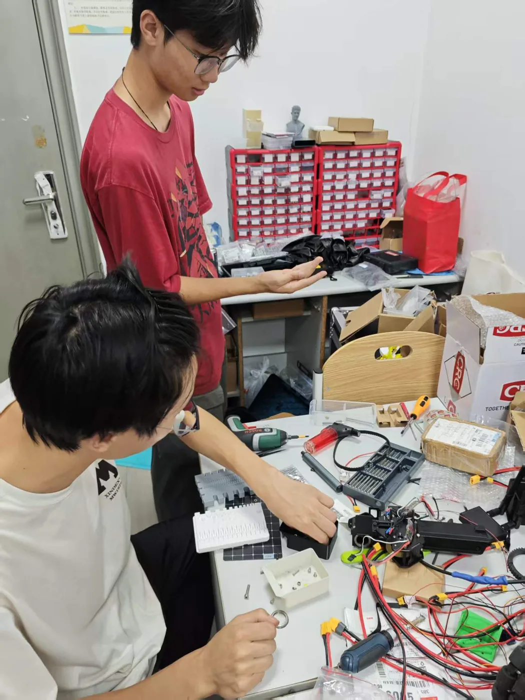
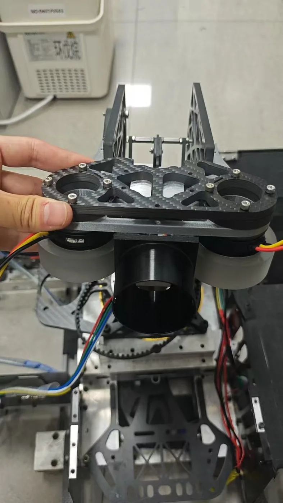

RoboMaster Engineering
OMMTEC / Research direction 01
Building robots for competition.
RoboMaster is part of our robotics work at Shanghai Institute of Technology. The team has received provincial-level RoboMaster awards.
Everyday RoboMaster
Our RM routine starts at the workbench: sorting equipment, organizing components and tools, and preparing the hardware for the next round of testing. These everyday tasks are part of the engineering work behind our competition robots.
Robot tuning and debugging are another part of that routine. We work together to check the hardware, investigate issues, and make adjustments as we prepare the robots for testing and competition.

